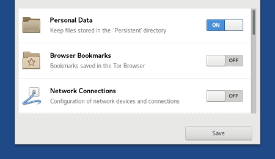
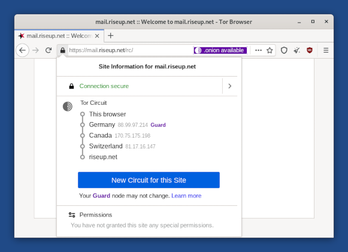

Tails 3.9 is the biggest update of Tails this year!
It includes two new features on which we have been working for more than a year:
- Additional Software
- VeraCrypt integration
This release also fixes many security issues and users should upgrade as soon as possible.
Änderungen
Neue Funktionen
Additional Software
You can now install additional software automatically when starting Tails.
When installing an additional Debian package from Tails, you can decide to install it automatically every time:

To check your list of additional software packages, choose Applications ▸ System Tool ▸ Additional Software.

The packages included in Tails are carefully tested for security. Installing additional packages might break the security built in Tails, so be careful with what you install.
Read our documentation on installing additional software.
VeraCrypt integration
To unlock VeraCrypt volume in Tails, choose Applications ▸ System Tool ▸ Unlock VeraCrypt Volumes.

The integration of VeraCrypt in the Files and Disks utilities was done upstream in GNOME and will be available outside of Tails in Debian 10 (Buster) and Ubuntu 18.10 (Cosmic Cuttlefish).
Read our documentation on using VeraCrypt volumes.
News reading in Thunderbird
Thunderbird is now the official RSS and Atom news feed reader in Tails.
Liferea will be removed from Tails in version 3.12, early 2019.
Aktualisierungen und Änderungen
Improve the configuration of the persistent storage to make it easier to scroll and consistent with the GNOME guidelines.

Included software
Update Tor Browser to 8.0, based on Firefox 60 ESR.
Based on Firefox Quantum.
New Tor circuit view

Update Thunderbird from 52 to 60.
Update Tor to 0.3.4.7-rc.
Update Electrum to from 3.0.6 to 3.1.3.
Hardware support
The following updates make Tails work better on recent hardware (graphics, Wi-Fi, etc.):
Update Linux to 4.17 which also fixes the Foreshadow attack.
Update the DRM and Mesa libraries to improve support for some graphics cards.
Update the Intel and AMD microcodes and most firmware packages.
Behobene Probleme
Stop displaying the Enigmail setup wizard every time Tails is restarted. (#15693 and #15746)
Show a spinner while starting Tor Browser, Tails documentation, and WhisperBack. (#15101)
Use Tor Browser again for browsing the documentation offline. (#15720)
Show Synaptic and Root Terminal even when no administration password is set. (#11013)
Tails Installer
Lesen Sie für mehr Details unser Änderungsprotokoll.
Bekannte Probleme
- Starting Tails 3.9 from DVD is twice slower than earlier releases. (#15915)
Lesen Sie sich die Liste der längerfristig bekannten Probleme durch.
Get Tails 3.9
Befolgen Sie zum Installieren unsere Installationsanweisungen.
To upgrade, automatic upgrades are available from 3.7.1, 3.8, and 3.9~rc1 to 3.9.
Falls Sie keine automatische Aktualisierung durchführen können oder das Starten nach einer automatischen Aktualisierung fehlschlägt, versuchen Sie bitte eine manuelle Aktualisierung.
Was kommt als Nächstes?
Tails 3.10 is scheduled for October 23.
Werfen Sie einen Blick auf die Roadmap, um zu sehen, was wir als Nächstes vorhaben.
We need your help and there are many ways to contribute to Tails (donating is only one of them). Come talk to us!